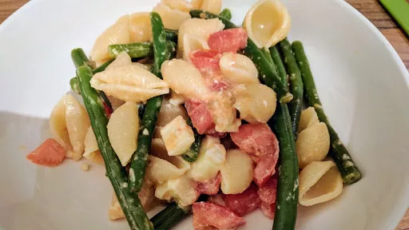

Summer pasta with melting brie
Try using feta, stilton, goat's cheese or even cheddar instead of brie.
Servings: 4
Total: 25 mins
 Vegetarian
Vegetarian
Ingredients
- 300 g short pasta shapes
- 250 g green beans, trimmed
- 250 g ripe tomatoes
- 200 g ripe brie cheese
- 1 clove garlic, chopped
- juice of ½ lemon
- 3 tbsp good olive oil
Instructions
- Cook the pasta300 gin a large pan of salted boiling water according to the packet instructions. Halfway through he cooking time (after about 5 minutes) throw in thegreen beans250 g.
- While the pasta300 gand beans are cooking, chop thetomatoes250 gandbrie200 gquite small and mix with thegarlic1 clove, lemon juice andolive oil3 tbsp. Season with salt and freshly ground black pepper
- Drain the pasta300 gand return it to the pan. Add the tomato andbrie200 gmixture and mix everything over a low heat until thebrie200 gstarts to melt. Serve straight away
- kcal 522
- fat 24 g
- saturates 10 g
- carbs 61 g
- sugar ? g
- fibre 4 g
- protein 20 g
- salt 0.92 g